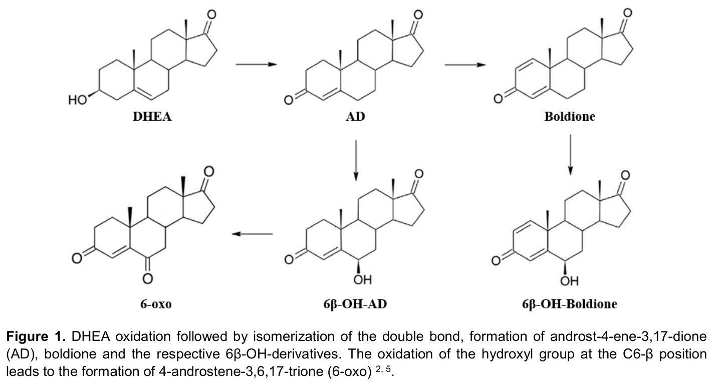
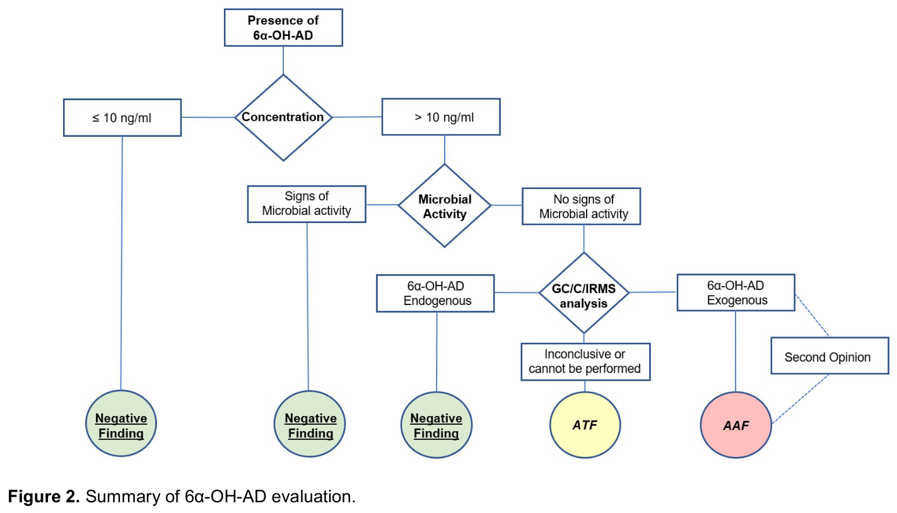

Technical Letters · TL21
Edition v1.0, 2019 (version 1.0) · effective 4 November 2019 · superseded
Retrieved on 25 November 2026 from https://www.wada-ama.org/sites/default/files/resources/files/tl21_6oxo.pdf
Editions: v2.0, 2021 (current) · v1.0, 2019
p. 1
IN SITU FORMATION OF 4-ANDROSTENE-3,6,17-TRIONE (6-OXO) AND METABOLITES
The World Anti-Doping Agency wishes to draw the attention of the Laboratories to the following issue that may affect Laboratory operations. This pertains, in particular, to the possible detection of 6-oxo and Metabolites in urine Samples resulting from the in situ transformation of DHEA.
It has been observed that microbial contamination may induce modifications in the structure of some endogenous steroids (e.g., DHEA) by oxidoreductive and other reactions, leading to the formation of hydroxylated and oxidized derivatives, which may hamper the interpretation of results (Figure 1)1, 2 . In additon, some steroids which are normally excreted as glucuronide conjugates [e.g. 6α-hydroxy Metabolites of 6-oxo such as 6α-hydroxyandrostenedione (6α-OH-AD) and 6α-hydroxytestosterone (6α-OH-T)] might be detected as aglycons because of bacteria-mediated hydrolysis3, 4 .
Figure 1 illustrates the possibility of in situ biotransformation of endogenous DHEA into the prohibited aromatase inhibitor 6-oxo, which would be detected in a urine Sample without its major Metabolite 6α-OH-AD2, 5 .

Figure 1. DHEA oxidation followed by isomerization of the double bond, formation of androst-4-ene-3,17-dione (AD), boldione and the respective 6β-OH-derivatives. The oxidation of the hydroxyl group at the C6-β position leads to the formation of 4-androstene-3,6,17-trione (6-oxo)2, 5 .
Therefore, Laboratories should be cautious when detecting 6-oxo in a urine Sample in the absence of the glucuronidated form of its major 6α-hydroxy Metabolite 6α-OH-AD6, 7, 8 . Further, since the isomer 6β-OH-AD may also be formed due to in situ biotransformation of DHEA or via light-induced auto-oxidation of the corresponding trimethylsilyl 3,5-dienol ethers⁹ , the Confirmation Procedure (CP) should be carefully reviewed to avoid an incorrect interpretation which may lead to an erroneous conclusion.
p. 2
It is noted that 6α-OH-AD may be formed endogenously and detected at low concentrations as a minor Metabolite in urine Samples (typically < 5 ng/mL, although endogenous concentrations greater than 5 ng/mL have been reported)¹⁰ . However, 6α-OH-AD concentration may also increase as a result of microbial activity and, therefore, 6-oxo may be detected in a Sample as a by-product of the enzymatic formation of 6α-OH-AD from either endogenous and/or microbial transformation origin. Therefore, the Laboratory shall perform GC/C/IRMS analysis (depending on Laboratory's analytical capacity, which may require the subcontracting of the analysis to another Laboratory) when the concentration of 6α-OH-AD is greater than 10 ng/mL and there is no indication of microbial activity, even if 6-oxo is present in the Sample.
Laboratories should implement the following course of actions before reporting an Adverse Analytical Finding (AAF) for 6-oxo:
- Perform a CP using an extraction method [(e.g., Solid Phase Extraction (SPE)] prior to the enzymatic hydrolysis step in order to avoid inducing the in situ formation of 6-oxo by the enzymatic activity of microbes already present in the Sample.
[Comment: However, if the side products have already been formed prior to the enzymatic hydrolysis, SPE will have no impact.]
- Evaluate the overall pattern of Metabolites in the Sample: 6α-OH-AD shall be detected, and the corresponding 6β-isomers should not be observed in the urine Sample. To verify this, the CP should include a step which preserves the stereochemical integrity at C6 (e.g., by derivatization using MSTFA, potassium acetate and imidazole6, 9 or by using a reverse-phase column for LC separation⁷ ).
[Comment: 6α-OH-AD can also be found in a Sample as a Metabolite of exogenous synthetic steroids, which are halogenated at the C6-position, e.g. 6α-bromoandrostenedione.]
-
During the CP, verify the conjugated state of 6-oxo Metabolites.
-
Evaluate the carbon isotope ratio of 6α-OH-AD by GC/C/IRMS if the concentration of 6α-OH-AD in the Sample is greater than 10 ng/mL (SG-adjusted, if needed¹¹ ) and there are no signs of substantial microbial degradation of the Sample (refer, for example, to TD EAAS¹² ).
When reviewing an analytical finding for 6-oxo, Laboratories should consider the following reporting recommendations (see also Figure 2):
• The finding shall be reported as a Negative Finding if:
- 6-oxo is detected in conjunction with 6β-OH-AD only; and/or
- 6-oxo glucuronide Metabolites are not detected; and/or
- 6α-OH-AD is identified (in the presence or absence of 6-oxo) at a concentration equal to or less than (≤) 10 ng/mL; and/or
- 6α-OH-AD is identified (in the presence or absence of 6-oxo) at a concentration greater than (>) 10 ng/mL (SG-adjusted, if needed¹¹ ), but the Sample shows signs of microbial activity;
p. 3
- 6α-OH-AD is identified (in the presence or absence of 6-oxo) at a concentration greater than (>) 10 ng/mL (SG-adjusted, if needed¹¹ ), with no signs of microbial activity, and the GC/C/IRMS analysis demonstrates an endogenous origin of 6α-OH-AD.
• The finding shall be reported as an Atypical Finding (ATF) if:
- 6α-OH-AD is identified (in the presence or absence of 6-oxo) at a concentration greater than (>) 10 ng/mL (SG-adjusted, if needed¹¹ ) and the GC/C/IRMS analysis is inconclusive or cannot be performed.
- If an ATF is reported, the Laboratory shall include a comment in the ADAMS Test Report recommending the Testing Authority to conduct at least one (1) follow-up no-notice test on the Athlete within a reasonable time frame (e.g. within 2 weeks).
• The finding shall be reported as an AAF if:
- 6α-OH-AD is identified (in the presence or absence of 6-oxo) at a concentration greater than (>) 10 ng/mL (SG-adjusted, if needed¹¹ ), with no signs of microbial activity, and the GC/C/IRMS analysis demonstrates an exogenous origin of 6α-OH-AD.
- When the results indicate an AAF for 6-oxo and/or 6α-OH-AD, it is recommended that the Laboratory seeks a second opinion, in writing, from another Laboratory before reporting the AAF. The second opinion shall be recorded in the Laboratory Documentation Package.

Figure 2. Summary of 6α-OH-AD evaluation.
p. 4
REFERENCES
-
Mareck, U. et al. Factors influencing the steroid profile in doping control analysis. J. Mass Spectrom. 43(7): 877-891, 2008.
-
Kozłowska, E. et al. Biotranformation of dehydroepiandoreterone (DHEA) by environmental strains of filamentous fungi. RSC adv. 7(50): 31493-31501, 2017.
-
Geyer H, Schanzer W, Mareck-Engelke U, Donike M. Factors influencing the steroid profile. In Recent Advances in Doping Analysis (3), Donike M, Geyer H, Gotzmann A, Mareck- Engelke U (eds). Sport und Buch Strauß: Koln, 1995; 95.
-
Ayotte C, Charlebois A, Lapointe S, Barriault D, Sylvestre M. Validity of urine samples: microbial degradation. In Recent Advances in Doping Analysis (4), Schanzer W, Geyer H, Gotzmann A, Mareck-Engelke U (eds). Sport und Buch Strauß: Koln, 1996; 127.
-
Holland, H. L. et al. Microbial hydroxylation of steroids. 9. Epoxidation of Δ6-3-ketosteroids by Rhizopus arrhizus ATCC 11145, and the mechanism of the 6β hydroxylase enzyme. Can. J. Chem., 62(12): 2740-2747, 1984
-
Van Thuyne, W. et al. Detection of androst-4-ene-3,6,17-trione (6-OXO ® ) and its metabolites in urine by gas chromatography-mass spectrometry in relation to doping analysis. Biomed. Chromatogr. 19(9): 689-695, 2005.
-
Deventer, K. et al. Quantitative analysis of androst-4-ene-3,6,17-trione and metabolites in human urine after the administration of a food supplement by liquid chromatography/ion trap-mass spectrometry. J. Chromatogr. B. 828(1-2): 21-6, 2005.
-
Van Eenoo, P. et al. Metabolism, excrection and detection of androst-4-ene-3,6,17-trione. In Recent Advances in Doping Analysis (13), Schanzer W, Geyer H, Gotzmann A, Mareck-Engelke U (eds). Sport und Buch Strauß: Koln, 2005; 57.
-
Schänzer, W., Horning, S., & Donike, M. Metabolism of anabolic steroids in humans: Synthesis of 6β-hydroxy metabolites of 4-chloro-1,2-dehydro-17α-methyltestosterone, fluoxymesterone, and metandienone. Steroids, 60(4), 353-366. 1995.
-
Polet, M. et al. Studies on the minor metabolite 6a-hydroxy-androstenedione for doping control purposes and its contribution to the steroid profile. Drug Test Anal., 6(10), 978-984, 2014
-
WADA Technical Document TD IRMS: Detection of Synthetic Forms of Endogenous Anabolic Androgenic Steroids by GC/C/IRMS. https://www.wada-ama.org/en/what-we-do/science-medical/laboratories
-
WADA Technical Document TD EAAS: Endogenous Anabolic Androgenic Steroids - Measurement and Reporting. https://www.wada-ama.org/en/what-we-do/science-medical/laboratories.
Retrieved on 25 November 2026 from https://www.wada-ama.org/sites/default/files/resources/files/tl21_6oxo.pdf